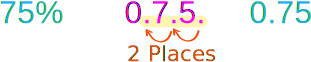

Decimals, Fractions and Percentages
Decimals, Fractions and Percentages are just different ways of showing the same value:
 |
A Half can be written...
... as a fraction:
12
... as a decimal:
0.5
... as a percentage:
50%
|
 |
A Quarter can be written...
... as a fraction:
14
... as a decimal:
0.25
... as a percentage:
25%
|
Here, have a play with it yourself:
Example Values
Here is a table of commonly used values shown in Percent, Decimal and Fraction form:
| Percent | Decimal | Fraction |
|---|---|---|
| 1% | 0.01 | 1/100 |
| 5% | 0.05 | 1/20 |
| 10% | 0.1 | 1/10 |
| 12½% | 0.125 | 1/8 |
| 20% | 0.2 | 1/5 |
| 25% | 0.25 | 1/4 |
| 331/3% | 0.333... | 1/3 |
| 50% | 0.5 | 1/2 |
| 75% | 0.75 | 3/4 |
| 80% | 0.8 | 4/5 |
| 90% | 0.9 | 9/10 |
| 99% | 0.99 | 99/100 |
| 100% | 1 | |
| 125% | 1.25 | 5/4 |
| 150% | 1.5 | 3/2 |
| 200% | 2 |
Conversions!
From Percent to Decimal
To convert from percent to decimal divide by 100 and remove the % sign.
An easy way to divide by 100 is to move the decimal point 2 places to the left:
| From Percent | To Decimal | |
|  | move the decimal point 2 places to the left | |
Don't forget to remove the % sign!
From Decimal to Percent
To convert from decimal to percent multiply by 100%
An easy way to multiply by 100 is to move the decimal point 2 places to the right:
| From Decimal | To Percent | |
 |
move the decimal point 2 places to the right | |
Don't forget to add the % sign!
From Fraction to Decimal
To convert a fraction to a decimal divide the top number by the bottom number:
Example: Convert 25 to a decimal
Divide 2 by 5: 2 ÷ 5 = 0.4
Answer: 25 = 0.4
From Decimal to Fraction
To convert a decimal to a fraction needs a little more work.
Example: To convert 0.75 to a fraction
| Steps | Example |
|---|---|
| First, write down the decimal "over" the number 1: |
0.751 |
| Multiply top and bottom by 10 for every number after the decimal point (10 for 1 number,100 for 2 numbers, etc): |
0.75 × 1001 × 100 |
| This makes a correctly formed fraction: |
75100 |
| Then Simplify the fraction: |
34 |
From Fraction to Percentage
To convert a fraction to a percentage divide the top number by the bottom number, then multiply the result by 100%
Example: Convert 38 to a percentage
First divide 3 by 8: 3 ÷ 8 = 0.375
Then multiply by 100%: 0.375 × 100% = 37.5%
Answer: 38 = 37.5%
From Percentage to Fraction
To convert a percentage to a fraction, first convert to a decimal (divide by 100), then use the steps for converting decimal to fractions (like above).
Example: To convert 80% to a fraction
| Steps | Example |
|---|---|
| Convert 80% to a decimal (=80/100): |
0.8 |
| Write down the decimal "over" the number 1: |
0.81 |
| Multiply top and bottom by 10 for every number after the decimal point (10 for 1 number,100 for 2 numbers, etc): |
0.8 × 101 × 10 |
| This makes a correctly formed fraction: |
810 |
| Then Simplify the fraction: |
45 |